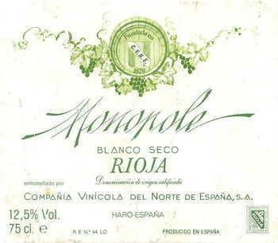

緑色を基調にしたさわやかな配色のラベルです。このラベルが緑色のドイツワインのボトル（細長いボトル）に貼ってあったら、あぁドイツワインだなぁ、モーゼルかなぁ、思ってもおかしくありません。

実際スペインの食堂でこのワインが運ばれてきた時には、「ありゃ？」と思いました。でも、ラベルをよく見たら「ESPANA」とか「RIOJA」とか書いてあるのですぐスペイン産だな、気が付いたのでした。
すばらしいワインラベルの世界 ワインラベルサイト